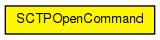
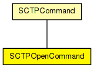

Control info to be used for active or passive SCTP open.
localAddr, remoteAddr, localPort, remotePort should be self-explanatory. localAddr is optional because SCTP can learn it from IP when a packet is received from the peer; localPort is optional because SCTP supports ephemeral ports.
The sendQueueClass, receiveQueueClass and sctpAlgorithmClass fields allow per-connection SCTP configuration. These fields may contain names of classes subclassed from SCTPSendQueue, SCTPReceiveQueue and SCTPAlgorithm, respectively. If not set, module parameters with similar names are used.
The fork parameter is used with passive open, and controls what happens when an incoming connection is received. With fork=true, it emulates the Unix accept(2) syscall semantics: a new connection structure is created for the connection (with a new connId, see in SCTPCommand), and the connection structure with the old connId remains listening. With fork=false, all the above does not happen: the first connection is accepted (with the original connId), and further incoming connections will be refused by SCTP by sending an RST segment.
See also: TcpCommandCode, SCTPMain
The following diagram shows usage relationships between types. Unresolved types are missing from the diagram.
The following diagram shows inheritance relationships for this type. Unresolved types are missing from the diagram.
| Name | Type | Description |
|---|---|---|
| SCTPCommand | class |
Control info for SCTP connections. This class is to be set as control info (see cMessage::setControlInfo()) on all messages exchanged between SCTP and application, in both directions. Some commands and indications (SCTP_C_OPEN_xxx, SCTP_I_STATUS) use subclasses. |
| Name | Type | Description |
|---|---|---|
| localAddresses | AddressVector |
IPvXAddress localAddr; // may be left empty |
| remoteAddr | IPvXAddress | |
| remoteAddresses | AddressVector | |
| localPort | int |
required for passive open |
| remotePort | int |
required for active open |
| fork | bool |
used only for passive open |
| queueClass | string |
may be left empty |
| sctpAlgorithmClass | string |
may be left empty |
| inboundStreams | uint32 | |
| outboundStreams | uint32 | |
| numRequests | uint32 | |
| messagesToPush | uint32 | |
| assocId | int |
identifies the socket within the application |
| sid | int | |
| numMsgs | int | |
| ssn | int | |
| sendUnordered | unsigned short | |
| lifetime | double | |
| localAddr | IPvXAddress | |
| gate | int |
// // Control info to be used for active or passive SCTP open. // // localAddr, remoteAddr, localPort, remotePort should be self-explanatory. // localAddr is optional because SCTP can learn it from IP when a packet // is received from the peer; localPort is optional because SCTP supports // ephemeral ports. // // The sendQueueClass, receiveQueueClass and sctpAlgorithmClass fields // allow per-connection SCTP configuration. These fields may contain // names of classes subclassed from SCTPSendQueue, SCTPReceiveQueue // and SCTPAlgorithm, respectively. If not set, module parameters with // similar names are used. // // The fork parameter is used with passive open, and controls what happens // when an incoming connection is received. With fork=true, it emulates // the Unix accept(2) syscall semantics: a new connection structure // is created for the connection (with a new connId, see in SCTPCommand), // and the connection structure with the old connId remains listening. // With fork=false, all the above does not happen: the first connection // is accepted (with the original connId), and further incoming connections // will be refused by SCTP by sending an RST segment. // // @see TcpCommandCode, SCTPMain // class SCTPOpenCommand extends SCTPCommand { //IPvXAddress localAddr; // may be left empty AddressVector localAddresses; IPvXAddress remoteAddr; // required for active open AddressVector remoteAddresses; int localPort = -1; // required for passive open int remotePort = -1; // required for active open bool fork = false; // used only for passive open string queueClass = "SCTPQueue"; // may be left empty string sctpAlgorithmClass; // may be left empty uint32 inboundStreams; uint32 outboundStreams; uint32 numRequests; uint32 messagesToPush; }